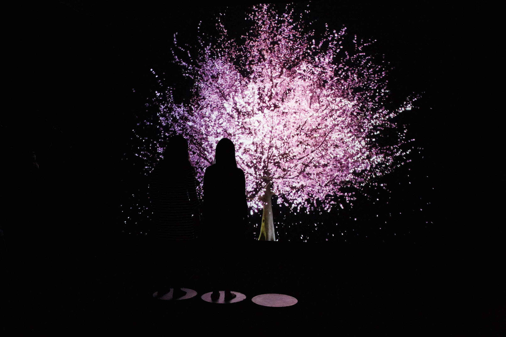
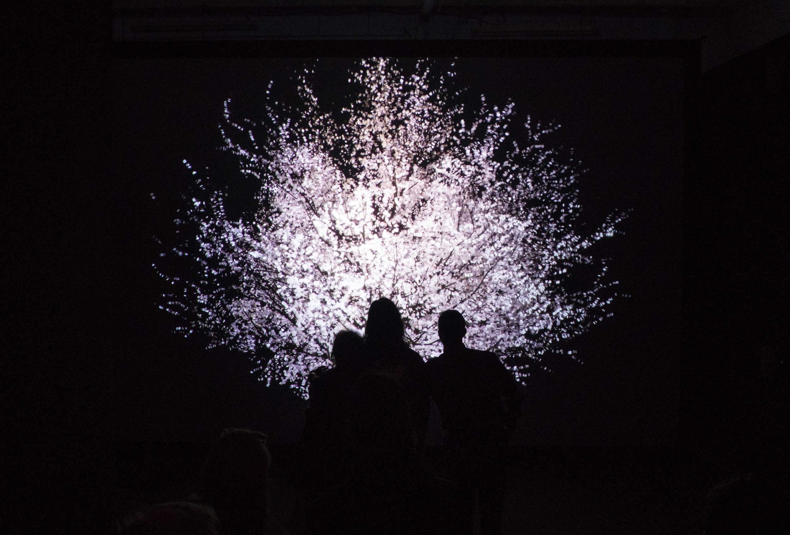
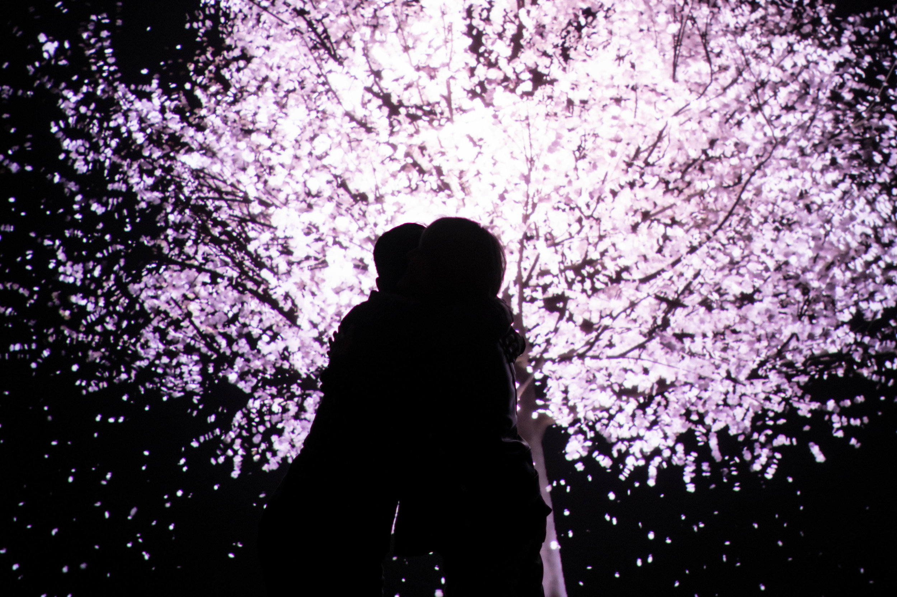

Blooming
Blooming on Vimeo.
Blooming highlights the importance of human presence and physical connection in our lives.
It is an audio-visual interactive installation that responds to physical contact between two to three participants. It takes the form of a life-size 3D cherry blossom tree, a common symbol of social ties and of the transience of life in East Asian culture.
As a response to participants’ heart rates, gestures, and skin-to-skin contact as they hold hands or embrace, the tree will flourish in peak bloom and will even release petals. When participants let go, the tree will return to its pre-bloom state. The colors of the cherry blossom flowers change based on participants' heart rates as they interact each other (the faster the heartbeats, the redder the tonality; the slower the heartbeats, the whiter the tonality). In addition to the tree’s visual response, sounds are also modulated according to the tree’s different stages: pre-bloom, blooming, maturing (petals falling).
For my role, I wrote the algorithms that determined the level of contact between users using the Kinect camera and a custom machine learning algorithm. Depending on the level of contact, I would trigger different visuals with my code.



Credits
Commissioned and Supported by: Nokia Bell Labs, New Museum NEW INC
Created and Directed by: Lisa Park
Sensor Development & Collaboration: Gang Huang (Nokia Bell Labs)
Technical Consultant: Sensorium Works
Technical Lead: Todd Bryant
3D Petals: Capitan Alegria
3D Assets: Jeremy Thompson
Heart rate Monitor programming: Ji Lee
Gesture Tracking programming: Kat Sullivan
Original Music by: Antfood
Tools used
Kinect Sensor
Python, Cinder, and Max/MSP,Jitter
Exhibitions
April 29–June 2, 2018
Only Human
Presented by NEW INC and Nokia Bell Labs
Mana Contemporary
Jersey City, NJ
Selected Press
2017 –
WHAT ARTISTS CAN TEACH US ABOUT MAKING TECHNOLOGY MORE HUMAN, Wired